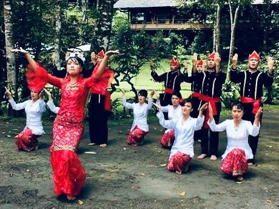
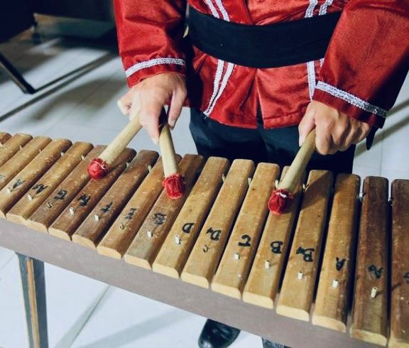
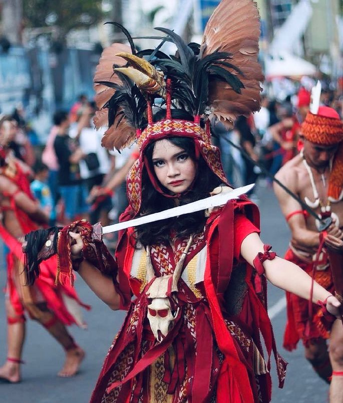

𝜗𝜚 ‧₊˚ ⊹
Welcome to My Blog
Tarian maengket

Kesenian tradisional Sulawesi Utara yang pertama adalah Tari Maengket. Hingga kini, Tari Maengket menjadi salah satu kesenian yang masih terus eksis. Dahulu, tarian ini dibawakan saat masa tanam dan panen padi.Jadi, sembari petani hendak mulai menanam maupun memanen padi, mereka juga sambil menarikannya. Selain menari, penari juga menyanyikan syair lagu khas dengan Bahasa Minahasa. Inti dari tarian ini adalah ungkapan rasa syukur kepada Tuhan.
Musik Kolintang

Musik Kolintang atau gong kecil sangat populer di Sulawesi Utara. Sejak dini, anak-anak diajarkan memainkan alat musik ini. Orkes Kolintang juga dikenal sebagai hiburan di berbagai acara rakyat atau pesta keluarga. Bahan pembuat Kolintang sendiri adalah kayu.
Tarian Kabasaran

Setiap daerah rasanya memiliki tarian perang yang identik dibawakan oleh penari laki-laki yang memegang senjata. Di Sulawesi Utara sendiri, tari Kabasaran lah yang merepresentasikan cerita perang dalam sebuah pertunjukan tari. Senjata yang digunakan adalah pedang atau tombak.Gerakan tarian ini mirip dengan perkelahian ayam jantan.Meskipun merupakan tarian perang, peruntukkan tarian sebenarnya untuk mengawal tokoh adat penting Minahasa saat upacara adat digelar. Kabasaran sendiri memiliki arti prajurit pengawal yang menjamin kelancaran jalannya upacara adat.